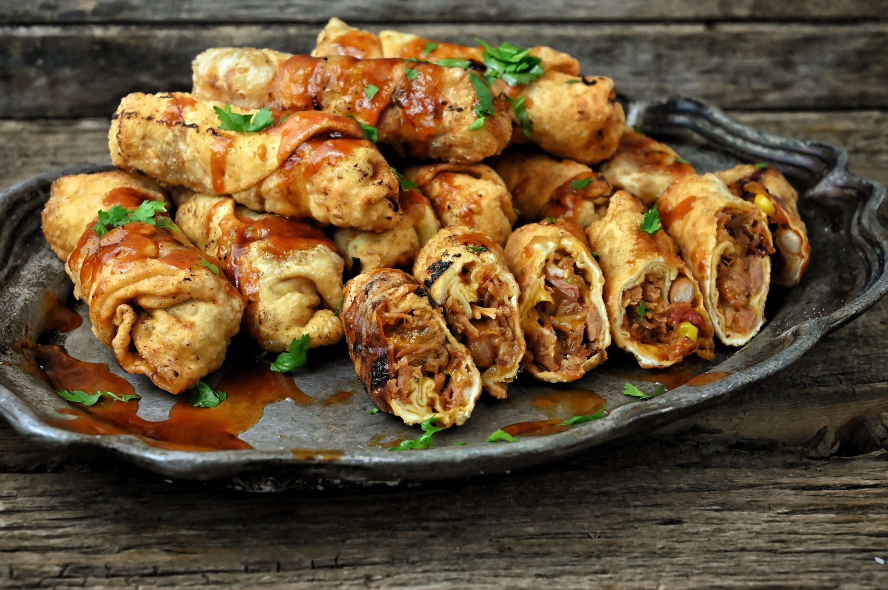

Home
Egg-Roll-Up

Description
Cheesesteak Egg Rolls are a mouthwatering fusion of two favorites — the classic Philly cheesesteak and crispy, golden egg rolls. Each roll is stuffed with tender, thinly sliced beef, sautéed onions and peppers, and melted cheese, all wrapped in a crunchy egg roll wrapper. Perfect as an appetizer, snack, or party favorite, these rolls offer a deliciously crispy bite with a savory, cheesy center that melts in your mouth. Serve with a side of creamy dipping sauce for the ultimate indulgence.
Ingredients:
- 1 tablepoon vegetable oil
- 1 onion, chopped
- 1(12.5) ounce package frozen sandwish steak meat
- 1(14 ounce) package egg roll wrappers
- 4 slices American cheese, halved
- 2 cups oil for frying, or as needed
- 1/4 cup ketchup
Steps to follow:
- Heat 1 tablespoon vegetable oil in a large skillet over medium heat. Cook and stir onion in hot oil until onion is translucent, about 5 minutes.
- Break frozen steak pieces into the skillet; cook and stir until steak is no longer pink, about 10 minutes.
- Remove from heat and set aside.
- Arrange 8 egg roll wrappers on a flat surface; place a half cheese slice on each one. Layer an equal amount of steak-onion mixture on top of each cheese slice.
- Roll up wrappers according to package directions and seal edges, wetting with water if necessary.
- Heat 1 inch oil in a deep fryer or large skillet to 375 degrees F (190 degrees C). Working in batches, fry egg rolls in hot oil until golden brown on all sides, about 5 minutes. Remove; drain on paper towels.
- Serve warm egg rolls with ketchup for dipping.
~Finished Product~
